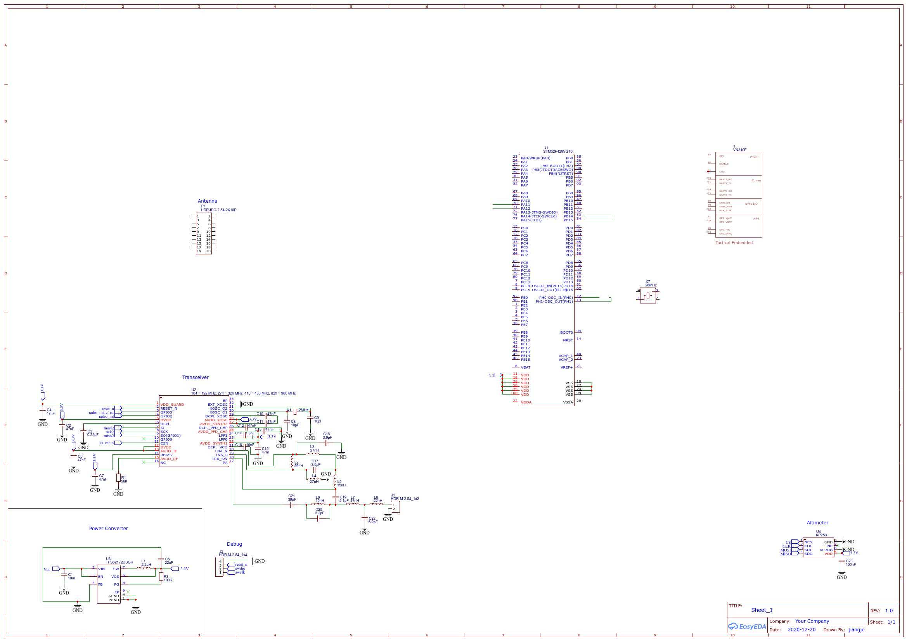

HART Flight Controller¶
The HART Flight Controller is the student-developed flight computer currently under development. For more information on the HART Flight Controller, please refer to the Flight Controller repository. For more information on the software for the HART Flight Controller, please refer to the Flight Software repository.

Basic Requirements¶
The most basic requirements of a rocket avionics system are triggering events and tracking the rocket. Tracking the rocket will be how we determine if the rocket reached its goal altitude or not. There are several ways in which this step could go wrong or produce incorrect results, so redundancy and rigorous testing should be preferred. In addition to this, the rocket’s avionics system must be able to trigger events under the right conditions in order to maximize the chances of reaching higher altitudes and, more importantly, the chances of successfully recovering the rocket.
Inputs¶
Environment (External)
Acceleration
Max: 50 G
Altitude
Attitude (pose/orientation)
GPS data
Magnetic Field
Temperature
Power Systems
Vmin: 3.3 V
Vnominal: 3.7 V
Vmax: 16 V
Outputs¶
Ground Station GUI Server
Flight data structure matches AltOS data structure
Block Properties¶
For safety reasons, we are currently required to use commercially certified products to control the pyrotechnic events, but the plan is to eventually replace the commercial flight controllers with this student-developed solution.